Aide-mémoire
Les chiffres, les articles et les procédures du manuel, réunis sur une page. À relire dans les trente minutes avant l'examen — pas à la place du manuel.
01Les chiffres à savoir par cœur
Formation et permis
- 70 h
- durée totale de la formation obligatoire
- 30 h
- module 1 — milieu, fonction, législation, normes
- 24 h
- module 2 — procédures en situation d'urgence
- 16 h
- module 3 — secourisme reconnu par la CNESST
- 60 %
- note de passage de l'évaluation finale
- 6
- secteurs d'activité encadrés par la LSP
Dates
- 1962
- Loi sur les agences d'investigation ou de sécurité remplacée
- 1976
- Charte des droits et libertés de la personne (Québec)
- 1979
- Loi sur la santé et la sécurité du travail
- 1982
- Charte canadienne Loi constitutionnelle
- 1994
- entrée en vigueur du Code civil du Québec
- 2006
- adoption de la LSP projet de loi 88
- 2008
- création du BSP
- 2010
- LSP pleinement en vigueur 22 juillet
- 2019
- Décret sur les agents de sécurité 4 décembre
Distances et périmètres
- 100 pi
- périmètre autour d'un objet suspect (bombe)
- 50 pi
- périmètre autour d'une fuite de gaz (au moins)
- 9 m
- interdiction de fumer devant un établissement de santé, d'enseignement postsecondaire ou un lieu d'activités pour mineurs
Seuils et montants
- 12 ans
- âge d'application du Code criminel
- 21 ans
- âge légal du cannabis au Québec depuis le 1ᵉʳ nov. 2019
- 30 g
- cannabis séché permis dans un lieu public
- 2 000 $
- amende maximale — infraction sommaire
- 6 mois
- emprisonnement maximal et délai de prescription — sommaire
- 5 000 $
- seuil du vol (art. 334) et de la fraude (art. 380)
- 3
- personnes minimum — attroupement illégal
Police et incendie
- 3
- corps de police : CPM, Sûreté du Québec, GRC
- niv. 1
- moins de 100 000 habitants
- niv. 5
- 1 million d'habitants ou plus
- niv. 6
- Sûreté du Québec — hors taille de municipalité
- 50 000
- habitants pour former son propre CPM
- 656
- services de sécurité incendie déc. 2020
- 4311
- code CNP — policiers
- 6541
- code CNP — agents de sécurité
- 15 sem.
- formation policière à l'ENPQ
Extincteurs et SIMDUT
- 2/3 – 1/3
- extincteur à eau : eau / air comprimé
- 10-30 s
- durée du jet — CO₂
- 10-25 s
- durée du jet — poudre chimique
- 6
- renseignements sur l'étiquette du fournisseur
- 3
- renseignements sur l'étiquette du lieu de travail
- 16
- rubriques d'une fiche de données de sécurité
- 44 %
- avertisseurs de fumée ayant fonctionné 2015
02Les articles de loi
Emploi de la force — Code criminel
- 25
- employer la force nécessaire sur des motifs raisonnables
- 26
- responsabilité criminelle pour tout excès de force
- 27
- force pour empêcher la perpétration d'une infraction
- 28
- arrestation par erreur — même protection
- 30
- empêcher une violation de la paix
- 34
- défense de la personne
- 35
- défense des biens
Arrestation — Code criminel 494
- 494(1)
- arrestation sans mandat par quiconque
- 494(2)
- par le propriétaire d'un bien ou la personne qu'il autorise
- 494(3)
- obligation de livrer aussitôt à un agent de la paix
Infractions — Code criminel
- 21
- participants à une infraction
- 23
- complice après le fait
- 24
- tentatives
- 63
- attroupement illégal 3 personnes +
- 64
- émeute
- 175
- troubler la paix, tapage sommaire
- 264
- proférer des menaces
- 265
- voies de fait définition, consentement
- 266
- voies de fait 5 ans
- 267
- agression armée, lésions corporelles 10 ans
- 268
- voies de fait graves
- 322
- vol
- 334
- punition du vol seuil 5 000 $
- 343
- vol qualifié
- 348
- introduction par effraction
- 351
- outils de cambriolage, déguisement
- 354
- possession de biens criminellement obtenus
- 380
- fraude
- 423
- intimidation
- 430
- méfait et données informatiques
- 437
- fausse alerte
Chartes et Code civil
- C.c. 7
- vie, liberté et sécurité
- C.c. 8
- fouilles, perquisitions ou saisies abusives
- C.c. 9
- détention ou emprisonnement arbitraires
- C.c. 10
- droits en cas d'arrestation ou de détention
- C.c. 24
- réparation par un tribunal compétent
- C.Q. 6
- jouissance paisible et libre disposition de ses biens
- C.Q. 49
- dommages-intérêts punitifs
- 947
- définition de la propriété
- 1457
- devoir de ne pas causer de préjudice à autrui
- 1463
- responsabilité du commettant (employeur)
C.c. = Charte canadienne · C.Q. = Charte québécoise · les autres = Code civil du Québec
Sécurité privée
- LSP 1
- les six secteurs d'activité
- LSP 3
- aucun statut d'agent de la paix
- LSP 70
- pouvoirs d'inspection
Normes de comportement
- 1
- langage, discrimination, respect, substances
- 2
- présenter son permis sur demande
- 3
- abus d'autorité
- 4
- aide au BSP et aux agents de la paix
- 5
- ne pas travailler pour une agence sans permis
- 6
- compétence et professionnalisme
- 7
- dignité, loyauté, conflit d'intérêts
- 8
- discrétion et confidentialité
- 9
- arme à feu : prudence et discernement
03Les procédures, dans l'ordre
Arrestation citoyenne
- Noter l'heure exacte
- Appeler la police (9-1-1)
- S'identifier : nom et fonction
- Informer de l'arrestation et du motif
- S'assurer que la personne comprend
- Vérifier l'absence d'arme ou d'objet d'évasion
- Force seulement si refus de coopérer et danger réel
- Réciter ses droits facultatif — rôle du policier
- Limiter les échanges ; l'aviser de son droit au silence
- Livrer la personne et les objets aux policiers
- Conserver ses notes
Expulsion
- Expliquer clairement la situation
- Préciser les règlements et droits du propriétaire
- Demander de quitter les lieux
- Si refus : ordonner de sortir, annoncer l'appel à la police
- Appeler la police
- Force uniquement si essentielle à la sécurité
Ne jamais mettre en état d'arrestation pour seulement expulser.
EVAB — extincteur
- Enlever la goupille
- Viser la base des flammes
- Appuyer sur le levier
- Balayer la zone en feu
Toujours se placer entre la sortie et l'incendie. Ne jamais s'éloigner même si le feu semble éteint. Pas à l'aise ? Attendre les pompiers.
Intervention
- Analyser
- Planifier
- Agir
Piège de l'analyse : le tunnel vision. Revenir aux étapes 1 et 2 aussi souvent que nécessaire.
QQCOQP — rapport
Qui · Quand · Comment · Où · Quoi · Pourquoi
Fuite de gaz
- Aviser immédiatement le superviseur présent
- Le superviseur se déplace pour constater
- Si la fuite semble réelle : 9-1-1
- Informer le directeur des lieux
- Périmètre d'au moins 50 pieds
- Appuyer les pompiers au besoin
Alerte à la bombe
- Toujours considérer l'alerte comme réelle
- 9-1-1, puis prévenir le superviseur
- Évacuer en attendant les policiers
- Périmètre de 100 pieds
- Ne pas toucher ni déplacer le colis
- Aucun cellulaire ni talkie-walkie à proximité — risque d'explosion
- Médias : « Je n'ai aucun renseignement à vous communiquer. »
Incendie
- Rester calme, déclencher l'alarme
- Désigner une personne calme pour le 9-1-1
- Évacuer, dégager les sorties
- Diriger vers les points de rassemblement
- Faire confirmer la présence de chacun
- Désigner quelqu'un pour guider les secours
- Établir un périmètre
Feu incontrôlable : quitter immédiatement et déclencher l'alarme.
Cahier de notes
Début — nom et numéro, date, adresse, horaire, heure de début et collègue remplacé, équipements et leur état, directives.
Événements — tout noter, régulièrement, chronologiquement, avec les déplacements.
Fin — collègue remplaçant, état des équipements (signé par lui), heure exacte, signature, trait de séparation.
04Les listes qu'on oublie
Gardiennage — 4 activités
Surveillance · Prévention · Contrôle · Protection
4 fonctions des services de sécurité
Renseignement · Prévention · Répression · Gestion de crise
3 types de postes
Stationnaire · Mobile · Patrouille
Gestes réglementaires de circulation
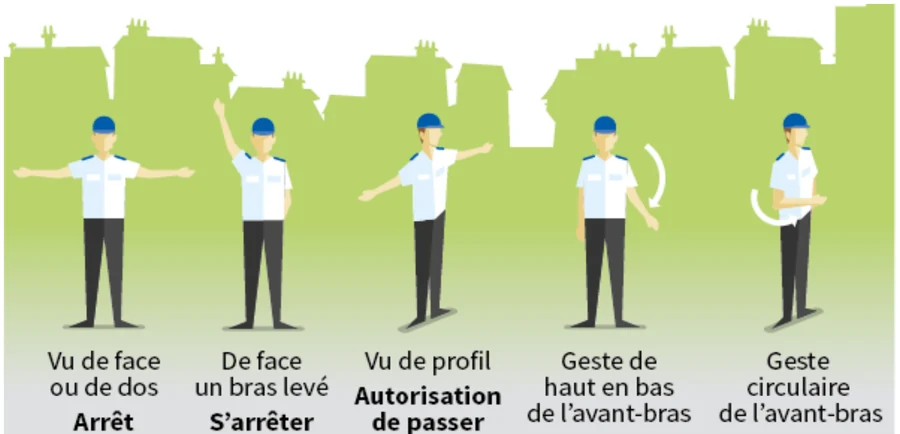
L'équipement
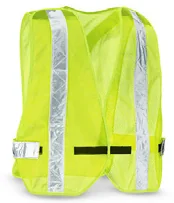
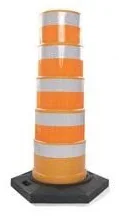
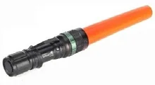
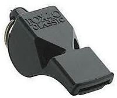
5 types de patrouille
Vérification (contrôle) · Surveillance · Observation · Recherche · Visibilité (présence)
4 types de foules
Passive (classique) · Sympathisants ou manifestants · Curieux (improvisée) · Hostile (agressive)
Gustave Le Bon : la foule est une entité distincte, influençable et impulsive.
Droits de la personne arrêtée
- Connaître les raisons de son arrestation
- Parler à un avocat
- Garder le silence
- Prévenir quelqu'un
- Pour un mineur : être accompagné d'un parent
Schéma de la communication
Destinateur · Destinataire · Contexte · Message · Code
Principes
S'exprimer · Écouter · Vérifier · Répondre · Penser au non verbal
Résolution de conflit
Reconnaître · Décrire · Énumérer les solutions · Analyser · Choisir · Mettre en œuvre · Évaluer
Progression de l'emploi de la force
- Présence de l'agent
- Communication claire et simple
- Contrôle physique léger escorte, immobilisation
- Contrôle physique puissant points de pression, amener au sol
- Armes intermédiaires bâton, aérosols, pistolet à impulsion
- Force mortelle dernier recours, pour sauver une vie
Le retrait reste possible à tout moment.
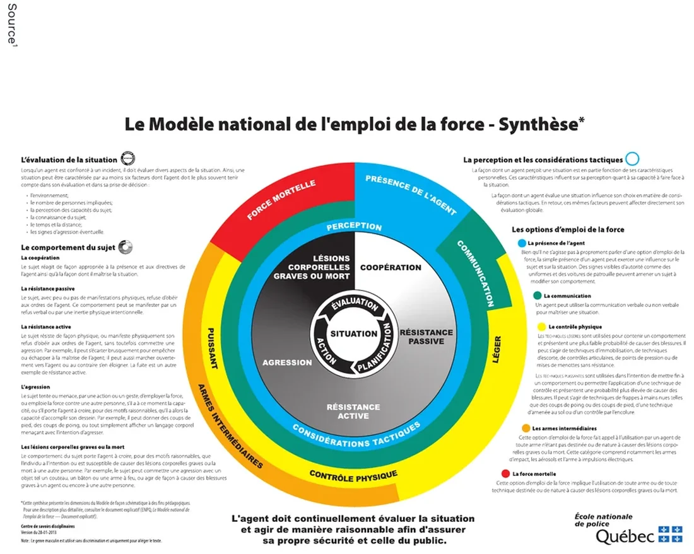
Comportements — Modèle national
Coopération · Résistance passive · Résistance active · Agression · Lésions corporelles graves ou mort
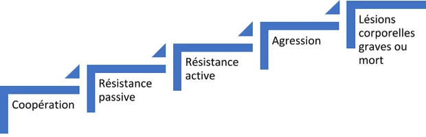
Tireur actif — 3 réponses
Fuir · Se barricader · Combattre
Classes de feux
- A
- combustibles ordinaires — bois, papier, chiffons
- B
- liquides inflammables — essence, peintures, huiles pas d'eau
- C
- équipement électrique pas d'eau
- D
- métaux combustibles — magnésium, potassium, titane pas d'eau
- K
- huiles et graisses de cuisson aucun liquide
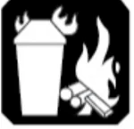
Combustibles ordinaires — bois, papier, chiffons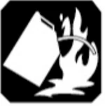
Liquides inflammables — essence, peintures, huiles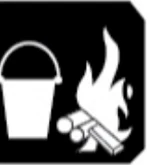
Métaux combustibles — magnésium, potassium, titane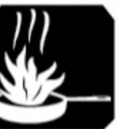
Huiles et graisses de cuisson3 méthodes d'extinction
Refroidissement · Étouffement · Retrait du combustible
Triangle du feu
Chaleur · Combustible · Comburant
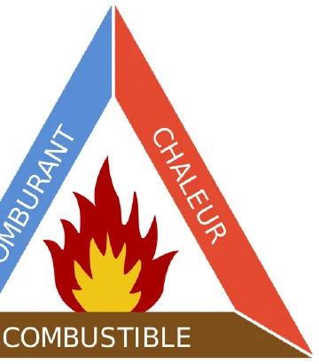
Extincteur selon le feu
- Eau — refroidissement
- A
- CO₂ — étouffement
- B, C
- Poudre chimique ABC
- A, B, C
CO₂ : jamais en espace clos sans équipement, jamais sur un feu de classe A (il se rallumera).
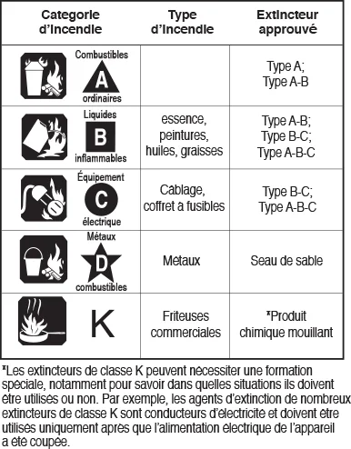
Déclencheurs manuels
- Rouge
- alarme incendie
- Bleu
- verrouillage des portes coupe-feu
- Jaune
- alarme de fuite de gaz
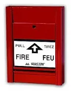
05Les distinctions qui piègent
Motif ou soupçon
Motif
Objectif : un collègue verrait la même chose. Motif raisonnable = aucun doute. On peut intervenir.
Soupçon
On présume d'après le résultat, sans être témoin. Jamais suffisant pour intervenir — récolter plus d'information.
Détention ou arrestation
Détention
Dès que la liberté d'une personne est limitée.
Arrestation
Il faut le dire clairement : « Vous êtes en état d'arrestation », et donner le motif.
Catégories d'infractions
Acte criminel
Les plus graves. Aucune prescription. Procès devant juge, ou juge et jury après enquête préliminaire.
Sommaire
Délits mineurs. 2 000 $ et/ou 6 mois. Prescription de 6 mois. Cour provinciale.
Mixtes (hybrides) — la majorité des infractions : le procureur choisit. Vol, agressions, menaces, fausse alerte.
Civil ou criminel
Civil
Demandeur contre défendeur. Preuve selon la prépondérance des probabilités. Dommages-intérêts, injonction.
Criminel / pénal
L'État contre l'accusé. Preuve hors de tout doute raisonnable. Amende, probation, travaux, prison.
Grève ou lock-out
Grève
Les employés cessent le travail pour faire pression.
Lock-out
L'employeur refuse de donner du travail.
Jamais faire une tâche d'un employé en grève. Rester impartial, patrouiller plus souvent et de façon imprévisible.
Sécurité interne ou externe
Interne — Corporate
Agents fidèles, connaissance fine des lieux. Coûts élevés, risque de grève, risque de fraternité excessive.
Externe — Contract
Pas de coûts d'embauche, flexibilité, professionnalisme. Rotation, appartenance faible, supervision moins constante.
Étiquettes SIMDUT
Fournisseur — 6
Produit · Fournisseur initial · Pictogrammes · Mention d'avertissement · Mentions de danger · Conseils de prudence
Lieu de travail — 3
Nom du produit · Conseils de prudence · Mention que la FDS est consultable
« Danger » = dangers les plus graves · « Attention » = moins graves. Fournisseur → FDS à l'employeur à la vente ; employeur → étiquetage et accès aux FDS ; travailleur → lire et comprendre.
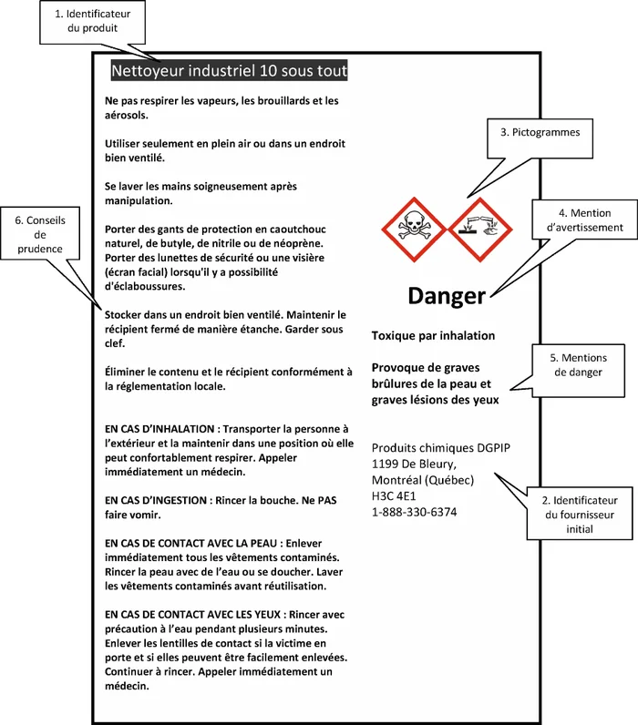
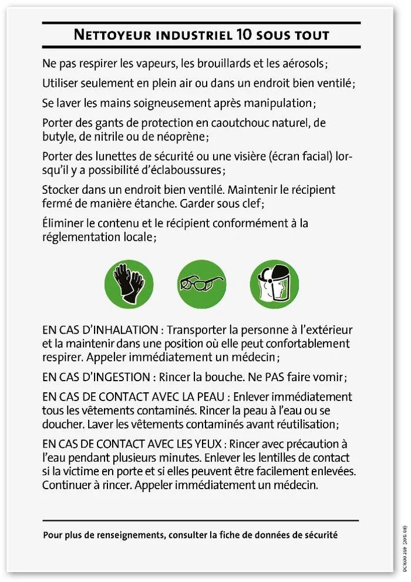
Les neuf pictogrammes
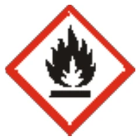
dangers d'incendie
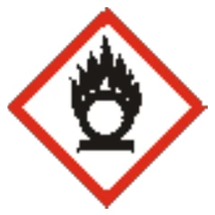
matières comburantes
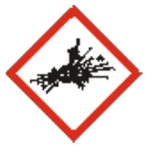
explosion ou réactivité
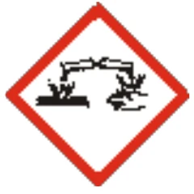
corrosif pour les métaux, la peau, les yeux
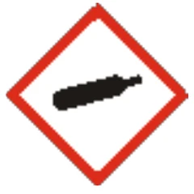
gaz sous pression
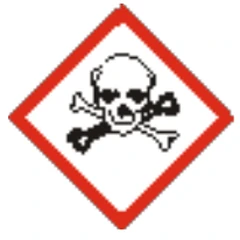
toxique ou mortel à petite dose
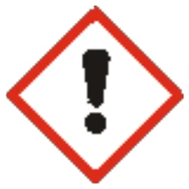
effets moins sévères, couche d'ozone
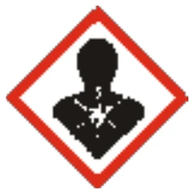
effets graves, danger d'aspiration
organismes ou toxines pathogènes
Systèmes d'alarme
Une étape
Sans personnel de surveillance. 3 fonctions. Beaucoup d'alarmes intempestives.
Deux étapes
Personnel requis. 4 fonctions (alerte validée). Peu d'alarmes intempestives.
Les interdits absolus
- Se présenter comme ayant l'autorité ou les pouvoirs d'un agent de la paix
- Diriger la circulation dans un lieu public sans autorisation
- Accepter argent, don ou faveur
- Répondre à un journaliste
- Commenter son travail sur les médias sociaux
- Mettre la main dans le sac d'une personne fouillée
- Fouiller pour chercher des preuves (rôle du policier)
- Toucher ou déplacer un colis suspect
- Traiter son véhicule de patrouille comme un véhicule d'urgence
- Laisser le public immobiliser ou frapper quelqu'un
- Inventer une raison dans un rapport
06Rédiger un rapport
Les 4 qualités
Clair · Précis · Concis · Complet
Les règles de forme
- Première personne (je), au présent
- Heures exactes, système de 24 heures
- Stylo bleu ou noir non effaçable ; à la main, en majuscules
- Aucune ligne vide ; un trait sur une ligne partielle
- Erreur : barrer proprement et initialer
- Signer et rayer le reste de la page
- Langage simple, sans codes ni abréviations
- Que des faits — ni supposition, ni opinion
Journalier ou incident
Journalier
Version soignée du cahier de notes : tout le quart.
Incident
Un rapport distinct par événement, en plus de la mention au journalier.
Superviseur qui consulte : il signe, et tout commentaire est précédé de « C.S. ». L'agent note au journalier quels documents ont été consultés et par qui.
Témoins : questions ouvertes. « De quelle couleur était la voiture ? », jamais « Était-elle noire ? ».
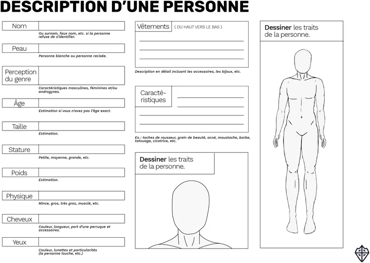
Contenu tiré du Manuel du participant de l'Académie XGuard (© Sécurité XGuard, 2021). Aide-mémoire personnel non officiel, sans affiliation avec XGuard ni le Bureau de la sécurité privée — il ne remplace ni le manuel ni la formation. Retour au quiz